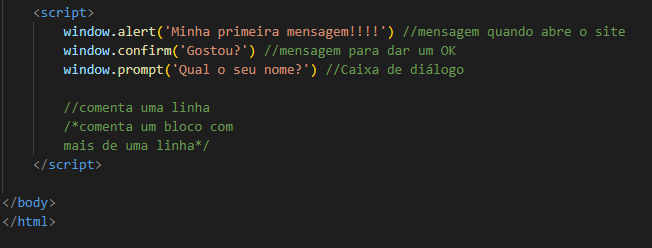

Objetivo: Aprendizagem com Float e uma breve introdução ao JavaScript.
A propriedade float do CSS determina que um elemento deve ser retirado do seu fluxo normal e colocado ao longo do lado direito ou esquerdo do seu containêr, onde textos e elementos em linha irão se posicionar ao seu redor.
Um elemento flutuante é um tipo de elemento cujo valor de float é diferente de none. Pode ter os seguintes valores: left, right, none, inline-start e inline-end.
Se um parágrafo fosse seguido por outro cabeçalho do mesmo estilo de cabeçalho "Floats Example", o segundo cabeçalho iria aparecer entre osboxes. Muito provavelmente, queremos que o próximo título seja alinhado à esquerda. Para conseguir isso, precisamos limpar os floats.
O jeito mais simples de limpar os floats é adicionar a propriedade clear para o próximo cabeçalho que queremos assegurar que esteja alinhado à esquerda.
Se limpar floats em um elemento não é uma opção, uma outra abordagem é limitar o contexto de formatação do bloco do containêr flutuante.
Alguns links úteis para facilitar o seu aprendizado: Float no W3Schols e no MDN.
Como pode ter notado, tudo que vier abaixo do clear terá seu fluxo normalizado.
avaScript é uma linguagem de programação que permiteimplementar itens complexos em páginas web — toda vez que uma página da web faz mais do que simplesmente mostrar a você informação estática — mostrando conteúdo que se atualiza em um intervalo de tempo, mapas interativos ou gráficos 2D/3D animados, etc. — você pode apostar que o JavaScript provavelmente está envolvido. É a terceira camada do bolo das tecnologias padrões da web, duas das quais (HTML e CSS) nós falamos com muito mais detalhes em outras partes da Área de Aprendizado.
Para incício deixarei um código de exemplo para curiosidade e despertar interesse, na próxima aula veremos esta linguagem bem detalhadamente.
